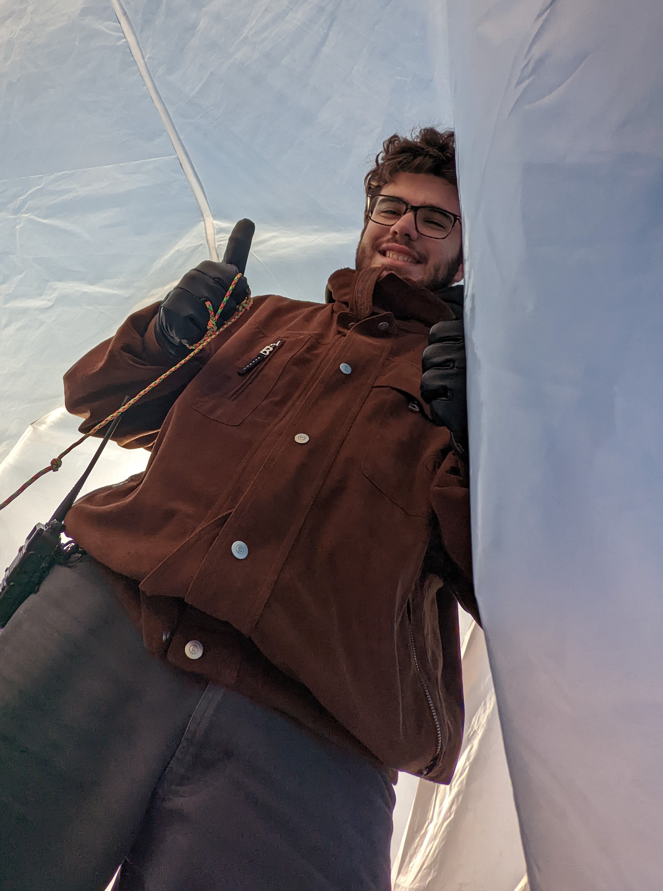

Research Experience
Balloon Payload Program

Tony is a member of the Univeristy of Maryland Balloon Payload Program (BPP), a student-run club that launches high altitude weather balloons carrying various payloads. He is currently the project lead on a payload called PTERODACTYL, a sensor suite planned to launch during the October 2023 and April 2024 solar eclipse. Additionally, he helps out on the launchpad during launches with inflating the balloons from high-pressure helium tanks.